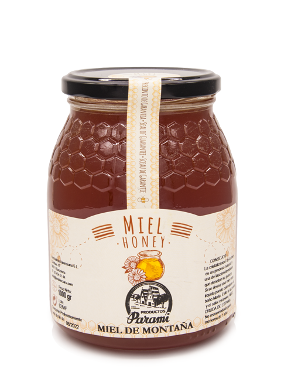
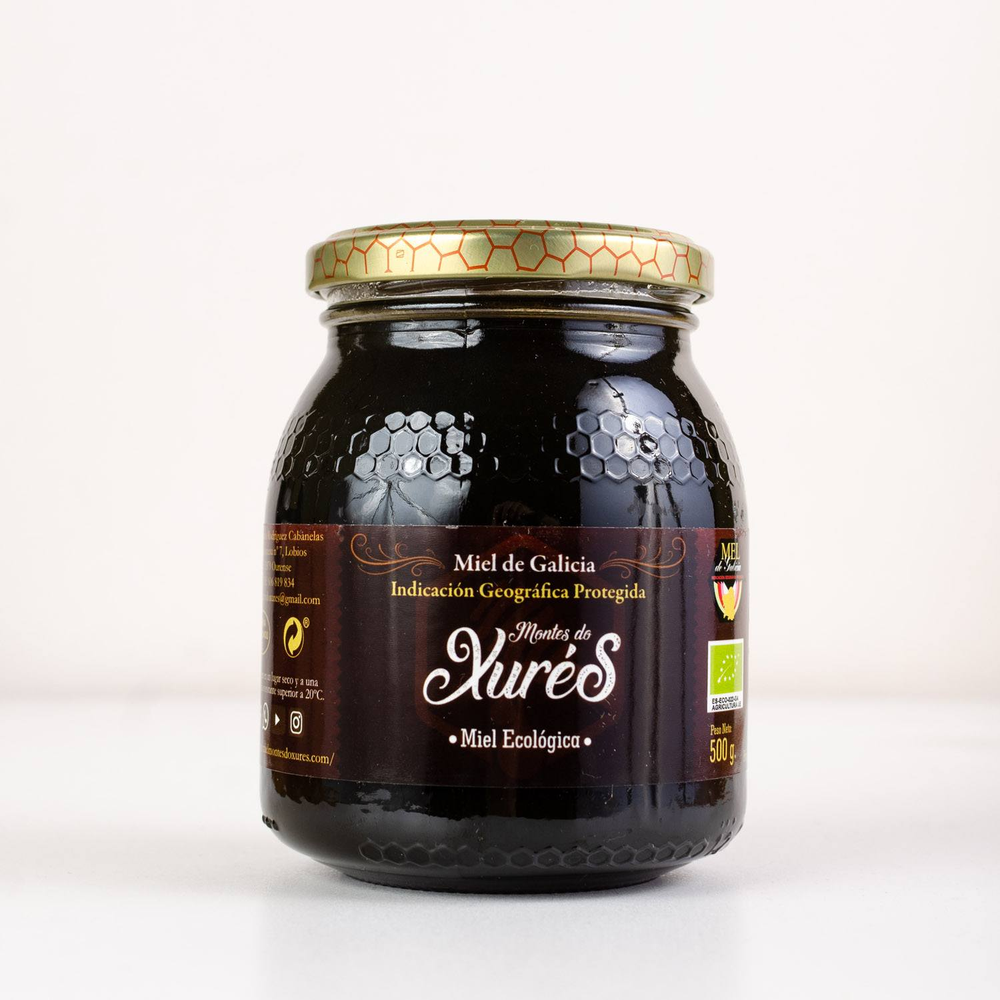
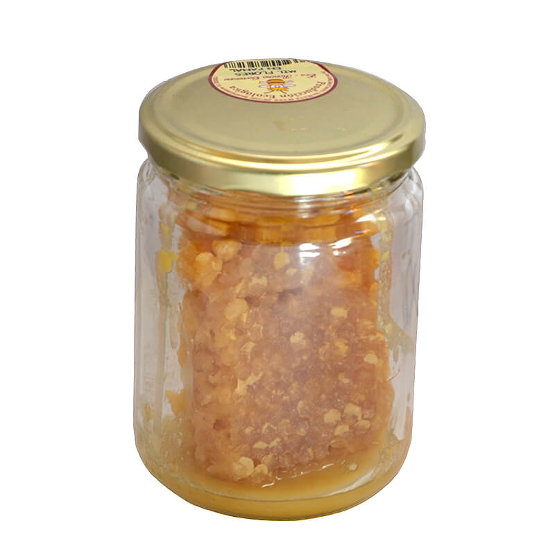
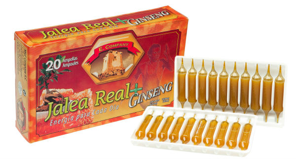
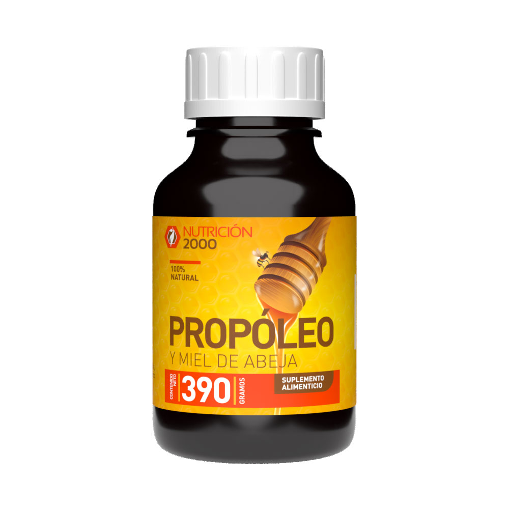
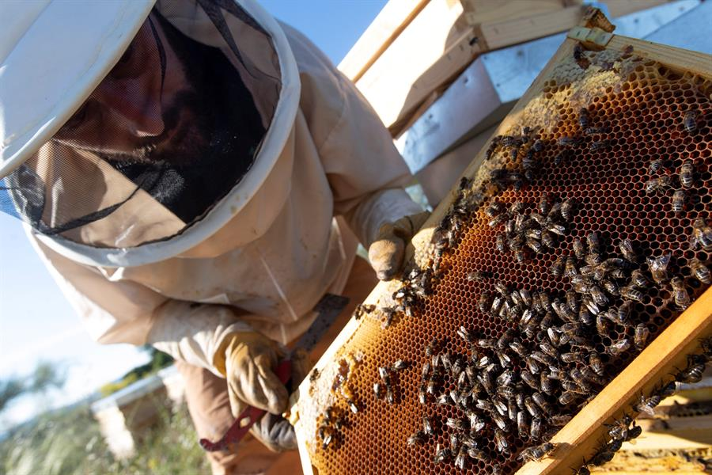

Miel de Montaña - Deliciosa miel de alta calidad.

Miel Ecológica - Producto 100% natural y orgánico.

Miel en Panal - Pura miel en su forma más natural.

Jalea Real - Ideal para fortalecer el sistema inmune.

Propóleo - Un excelente protector natural.
En Abejas y Zánganos nos dedicamos a la elaboración de productos de alta calidad a base de miel y derivados de las abejas. Nuestro compromiso es ofrecer productos naturales, ecológicos y beneficiosos para la salud, apoyando prácticas sostenibles y respetuosas con el medio ambiente. Nuestra misión es llevar lo mejor de la naturaleza a tu mesa y a tu vida diaria.
